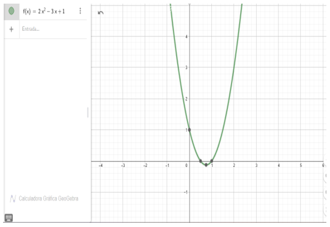

FUNCION CUADRATICA
En precálculo, una función cuadrática es una función matemática que se puede expresar mediante una ecuación de segundo grado. En otras palabras, es una función polinómica de grado 2. Su forma general es:
f(x) = ax^2 + bx + c
Donde:
- "a," "b," y "c" son coeficientes numéricos, con "a" distinto de cero.
- "x" es la variable independiente.
Las funciones cuadráticas se caracterizan por tener una gráfica en forma de parábola en un sistema de coordenadas. La dirección de apertura de la parábola (hacia arriba o hacia abajo) y la ubicación de su vértice están determinadas por los valores de los coeficientes "a," "b," y "c."
Ejemplo:
Consideremos la función cuadrática:
f(x) = 2x^2 - 3x + 1
Solución:
- Hallar el vértice de la parábola: El vértice de la parábola de una función cuadrática se encuentra en el punto (-b/2a, f(-b/2a)). En este caso, "a" es igual a 2 y "b" es igual a -3.
- x del vértice = -(-3) / (2 * 2) = 3/4
- f(3/4) = 2(3/4)^2 - 3(3/4) + 1 = 9/8 - 9/4 + 1 = 1/8 - 9/4 + 1 = 1/8 - 18/8 + 8/8 = -17/8 + 8/8 = -17/8 + 1 = -17/8 + 8/8 = -9/8
Entonces, el vértice de la parábola es (3/4, -9/8).
- Determinar la dirección de apertura de la parábola: Como el coeficiente principal "a" es positivo (2 en este caso), la parábola se abre hacia arriba.
- Hallar las raíces de la función (los puntos en los que f(x) = 0): Para encontrar las raíces de la función cuadrática, resolvemos la ecuación:
2x^2 - 3x + 1 = 0
Podemos factorizarla o usar la fórmula cuadrática. En este caso, la factorización es:
(2x - 1) (x - 1) = 0
Esto nos da dos soluciones:
2x - 1 = 0 ⟹ 2x = 1 ⟹ x = 1/2 x - 1 = 0 ⟹ x = 1
Por lo tanto, las raíces de la función son x = 1/2 y x = 1.
- Graficar la función: Con esta información, podemos graficar la función cuadrática en un sistema de coordenadas, teniendo en cuenta el vértice, la dirección de apertura y las raíces.
La gráfica será una parábola que se abre hacia arriba, con el vértice en (3/4, -9/8), y pasando por los puntos (1/2, 0) y (1, 0).
